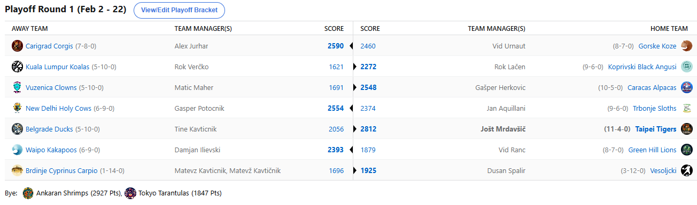
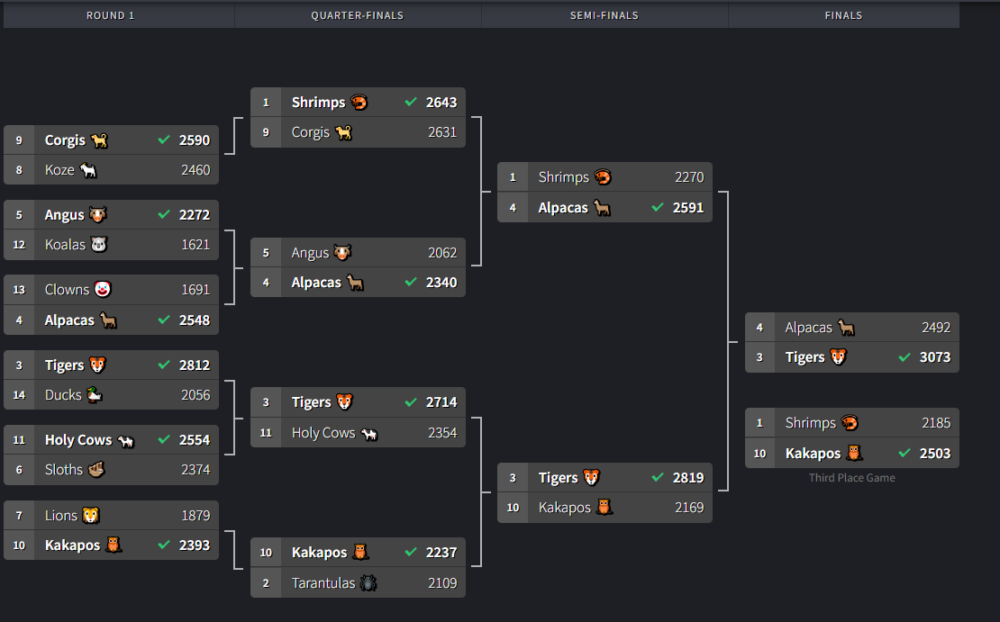

SEZONA 25/26
- Pravila in sistem tekmovanja
- Matchup1 (Oct 21 - Oct 26)
- Matchup2 (Oct 27 - Nov 2)
- Matchup3 (Nov 3 - Nov 9)
- Matchup4 (Nov 10 - Nov 16)
- Matchup5 (Nov 17 - Nov 23)
- Matchup6 (Nov 24 - Nov 30)
- Matchup7 (Dec 1 - Dec 7)
- Matchup8 (Dec 8 - Dec 14)
- Matchup9 (Dec 15 - Dec 21)
- Matchup10 (Dec 22 - Jan 28)
- Matchup11 (Dec 29 - Jan 4)
- Matchup12 (Jan 5 - Jan 11)
- Matchup13 (Jan 12 - Jan 18)
- Matchup14 (Jan 19 - Jan 25)
- Matchup15 (Jan 26 - Feb 1)
- Play-in (Feb 2 - Feb 22)
- Playoff 1 (Feb 23 - Mar 8)
- Playoff 2 (Mar 9 - Mar 22)
- Playoff 3 (Mar 23 - Apr 5)
2025/26 - Fantasy Koroška - sezona 9
Play-IN Round (Feb 2 - Feb 22)

Recap: Play-IN
Zaključena je play-in runda playoffa in če že ne v matchupih, pa je grmelo vsaj na free agent tržnici. Porabljeno je bilo, reci piši, absurdnih 768$ !!!
Za primerjavo, tedensko povprečje pred tem, je bilo nekje okoli 200$. Vsekakor so se izprsili managerji in če že drugega ne, dali vse od sebe.
Ker se nam ne ljubi računati kdo je porabil največ, si najprej poglejmo matchup dveh, ki sta vsaj porabila vse svoje acquisitione. To sta bila G€P$
(valute v imenu pač niso naključje) in pa Kups. 18 podpisov in napet boj od prvega do zadnjega sta zaznamovala tale matchup, na koncu pa
je krajšo potegnil Kups in se še drugo sezono zapored poslovil v play-in rundi. Za tega sicer izjemno trofejnega managerja bi to utegnil
biti rdeči alarm in videli bomo, kaj lahko stori bolje v prihodnji sezoni. No, za začetek lahko v obračunu za biti ali ne biti odvrže
suspendiranega igralca nazaj v morje. Ta navezanost na PG-ja, ki bi jo utegnili povezovati tudi s podcenjevanjem svojega nasprotnika pa
je Jana morebiti celo stala napredovanja. Ob številnih odsotnosti ključnih igralcev – Coopa, Donkeja in Durena kakopak. Toda, podarjenemu
konju se ne gleda v zobe in s to mentaliteto je ponujeno odrtih rok sprejel Geps, ki bo, verjeli ali ne, šele prvič po 4 sezonah zaigral
v četrtfinalu. Zmago velikemu favoritu Kupsu je v slogu Isaiah Joa, ki je bil mimogrede celo prvi igralec Svetih Krav, ukradel iz rok in
si zagotovil četrtfinalno vozovnico. Čestitamo!
Zelo zanimivo je bilo tudi v obračunu Gorskih Koz in Carigrajskih Corgijev. Na koncu so vendarle na izkušnje napredovali slednji. Boljše manevriranje po tržnici
je na koncu prineslo tistih nekaj točk prednosti, da je Aleks v nedeljo lahko mirno zaspal. Še naprej ostaja s tem edini, ki nikoli ni
izpadel v prvi rundi končnice. 2 managerja (Herko&Jole) sta izpadla v play-inu samo 1x, vsi ostali pa vsaj 2x, kar vsekakor priča o
izenačenosti in zanimivosti lige. Fred, ki s povprečno uvrstitvijo 4.13 zaseda celo prvo mesto po tem kriteriju, je tako še vedno v igri,
da to povprečje ohrani ali izboljša, za to pa ga čaka zelo visoka ovira – Cicko. Če smo "glass half full" tip človeka, si lahko ob napovedi
tega matchupa rečemo: "Aleluja, Fred al pa Cici bo izpado". Če smo "glass half empty" pa z bolj otožnim: »omg en od ttih dveh bo v polfinalu«.
Komaj čakamo, da vidimo kdo, pričakujemo pa ogrooooomno trashtalka na tej relaciji. Urnaut lanskega drugega mesta letos ne bo nadgradil s
še eno dobro uvrstvijo, trade za Kawhija mu je sicer dal upanje, a vendarle ni bil dovolj in moral se bo zadovoljiti z boji za 9. mesto.
No, ostali matchupi so bili precej manj zanimivi kot zgoraj omenjena dva. Za začetek je Vuzeniške Klovne odpihnil Gašper s svojimi Karakaškimi Alpakami. Ko ima
hudič mlade, jih ima veliko pravijo in nič drugače ni bilo tokrat v Vuzenici. Hitreje kot blagajničarka v Lidlu je lahko Maher metal svoje varovance
v IR in nazaj na FA market, dokler ni dokončno vrgel puške v koruzo. Za nameček je Matic danes zjutraj šokiral z izjavo: »gospod LM, Klovni se
z letošnjo sezono poslavljajo.« Preden bi ga utegnili prepričevati pa je v slogu tistega »SIKEEEEE« mema povedal, da bo samo selil franšizo
in našel novo maskoto – Klovni mu namreč sreče niso prinesli in kot sam pravi, je čas za korenite spremembe. Odprtih rok je tale seoski
BYE sprejel Herko, ki se po lanski anomaliji in izpadu v playinu vrača v četrtfinale in nikakor se tukaj ne namerava ustaviti. Kako dolgo
bo žaloval za takozvanim Puščavskim Pitbullom, Dillonom Brooksom, ki si je včeraj zlomil roko in Alpak ne bo več mogel nositi na svojem
hrbtu? Kdo bo joker iz rokava tega pretkanega kvizmojstra, ki mu ne seže do kolen niti Kemik Ojstra?
Kaj dosti besed ne bi izgubljali niti za obračun med Tigri in Račkami. »Neke ptice nikad ne polete« je dejal Tiger, po tem ko je v slogu glinastega goloba z neba
skinil Beograjsko Račko. Jutranji video flame je bil dovolj zgovoren in ruleta majster Tinki Binki je sezono sklenil v playinu. Če drugega ne,
je tega že vajen hehe. Na drugi strani pa Tigri z 9. zaporedno zmago meljejo naprej in Jole je v slogu največjih šampionov izjavil:
»če ne bo 12 zapored, pol je vseskop đabe«. Bo kar držalo, čas je da se poklopi in se titula vrne tja kamor spada – na Janeče.
Naslednja ovira bo vedno neugodni Geps, ki je sicer redna »stranka«, a kaj ko pretekli obračuni nič ne štejejo, ko gre na vse ali nič.
Zapravljivi Gašper, ki je edini z manj kot 100$ na računu, se lahko sproščeno poda v tale boj, svojo najboljšo uvrstitev v zgodovini
je namreč že vsaj izenačil, zdaj pa je želja, da letvico premakne še višje.
Brez kakršnihkoli možnosti za ubranitev naslova je kaj kmalu po začetku play-ina ostal lanski prvak Veratti. Njegove Koale so padale kot gnila jabolka in v
roku dveh dni je ostal brez 4 od prvih 6 izborov na draftu. Letošnja strategija »bolj star bolj dober« je očitno bolj primerna pri
izbiri vina, kot pri izbiri igralcev za naskok na back-to-back titulo in tega se je zgrda naučil tudi Verčki. Curry, Sabonis, Butler
in Lavine so se v tem matchupu combinali za pičlih 72 točk in jasno da je to odločno premalo in Rok naslova ne bo ubranil. Lahko pa
uživa ob gledanju prestižnega kosa zlatnine na svojih policah še natanko 54 dni, po tem pa ga bo predal v roke neznanokomu. Lačen, ki
je lani zasedel prav zadnje mesto izmed vseh, pa bo letos krepko izboljšal svojo uvrstitev. Tisto, kar je napovedoval že redni del se
je uresničilo in Voka se v četrtfinale podaja celo z upanjem po povratku Jaysona Tatuma. Lačen podiuma še nima, najvišje je bil četrti v
sedaj že pradavninski sezoni 2018/19. Bo v deveti sezoni zabeležil šele prvo liho uvrstitev s prvim mestom, ali pa bo ponovno končal
klavrno kot 8.?
Zadnji dvoboj je potekal na relaciji sophomorjev – Dili vs Ranac. Drop Cama Thomasa se je morda izkazal za nekoliko prehitrega, kajti očitno je Camu vseeno v
katerem dresu spruži vsakič ko se dotakne žoge. Ne samo, da je menjal dres Netsov za Buckse, menjal je tudi dres Lionsov za Tarantele.
No, ta move mu je vsaj prinesel četrtfinale NBA Fantasy Koroška, Lionsi so bili namreč tepeni in jih tam ne bo. Harden je zaradi trejda
zabušaval, Stewart se raje tepe kot igra košarko in smo kjer smo. Kakorkoli že, Ranac bo izboljšal svojo lansko uvrstitev, ko je bil
komaj 15. in če drugega ne je krivulja rezultatov obrnjena navzgor. Enako velja tudi za Iljana, ki pa se tukaj še ne ustavlja. Čaka ga
še en obračun lanskih rookijev z Vitom in eden izmed njiju bo celo izkusil polfinalni oder! Za nameček pa je Dili celo vodilni v
predictionih in se mu tudi na tisti fronti nasmiha kakšna nagrada. Se je čakanje na Dejounteja Murrayja vendarle izplačalo in bo to
dodaten as iz rokava v četrtfinalu?
Kar se tiče BYE-jevčkov, nismo pretirano spremljali dogajanja, po pričakovanju je Cicko ostal brez Jarena Jacksona, medtem ko poškodbe pestijo tudi izvrstnega
Netanyahoopsa in videli bomo, ali bo skoraj invincible regular season popolnoma zaman in bo zdaj Nejc spušil proti Fredu, ali pa je
bil poraz proti Herku zgolj anomalija in bo Nejc ponovno napadal naslov? Vito se je Torej okrepil s Camom Thomasom, bo pa potreboval
čim manj tankanja in zdravega Janisa, če želi poseči po najvišjih mestih.
Zdaj gre zares! Srečno vsem in ne pozabite na predictione ... hkrati pa si spodaj poglejte še kratek filmček, kakšna je bila usoda Račk!
Best memes
